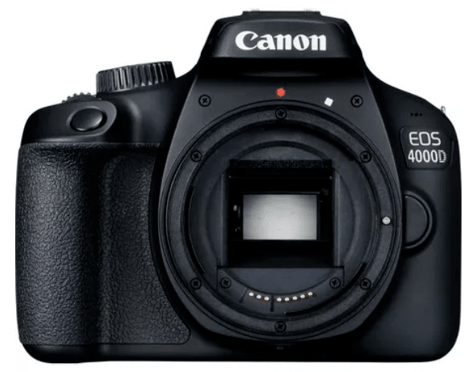
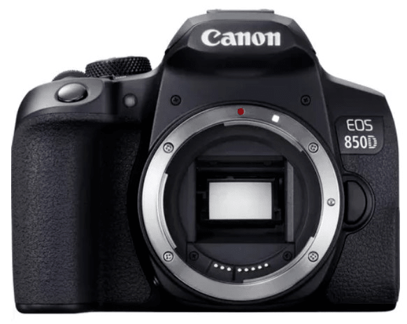
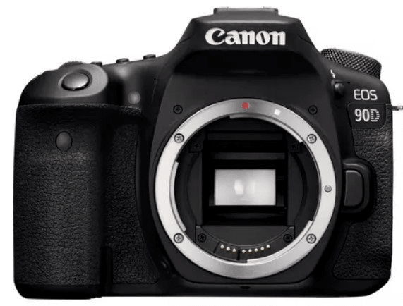

For beginners with a professional finish. Easy camera operation and intuitive.

For beginners already familiar with an SLR camera. It has the power of a semi-professional.
You can achieve perfect finishes to advance your knowledge in photography.

Artistic photography. Ideal for artists who want to achieve several different types of
photography.

Perfect for motion picture enthusiasts. Suitable for nature, sports or action. Easy handling
with professional resolution.